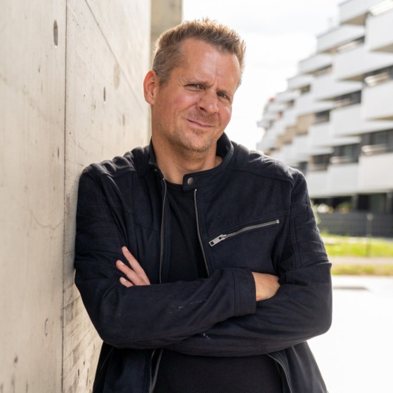

Senior Software Engineer with more than nine years of professional experience developing enterprise software, distributed systems, computer vision applications, embedded software, and automation platforms. I enjoy designing clean architectures, optimizing performance, automating development workflows, and solving technically challenging problems.
I am passionate about developing software that is reliable, maintainable and built to solve real-world problems. During the last nine years I have worked on software ranging from embedded systems and industrial automation to enterprise search platforms and AI-powered computer vision applications. My professional focus lies in designing scalable backend systems, building automation frameworks, integrating distributed services, and improving software quality through modern engineering practices.
I strongly believe that good software engineering is not only about writing code but also about understanding the complete system. Performance, maintainability, testing, automation and architecture are equally important when building software that lasts. Outside of work I enjoy exploring new technologies including Rust, Large Language Models, Retrieval-Augmented Generation (RAG), High Performance Computing and distributed computing.
September 2022 – Present
Working on one of Europe's leading Enterprise Search platforms, designing scalable testing infrastructure and automation solutions for large distributed systems.
2022
Further development of a large-scale MFC desktop application within an established legacy codebase.
2021 – 2022
Development of embedded software for industrial and safety-critical systems requiring high reliability.
2017 – 2020
Development of AI-powered computer vision systems for intelligent traffic monitoring.
Docker-based photo management platform for organizing large image collections.
View Project →Modern C++ implementation focusing on algorithms, graphics and software architecture.
View Project →Systems programming experiment written in Rust, exploring memory safety and performance.
View Project →Retrieval-Augmented Generation application using Large Language Models for document analysis.
View Project →Automatically loaded from my GitHub repositories.
University of Vienna
Specialization in High Performance Computing, Parallel Algorithms, Numerical Mathematics and Scientific Software Development.
University of Applied Sciences St. Pölten
Focus on simulation methods, engineering software and computational science.
I believe software should be simple, maintainable and built for long-term success. Good engineering means understanding the complete system, automating repetitive work, measuring performance before optimizing, and writing code that future developers enjoy working with. I continuously explore modern technologies such as Rust, Large Language Models, Retrieval-Augmented Generation, parallel computing and cloud-native architectures to broaden my technical expertise.